Как отмечалось в предыдущей главе, особенности взаимодействия элементов моделируемой системы могут быть представлены на диаграммах последовательности и кооперации. Если первая служит для визуализации временных аспектов взаимодействия, то диаграмма кооперации предназначена для спецификации структурных аспектов взаимодействия. Главная особенность диаграммы кооперации заключается в возможности графически представить не только последовательность взаимодействия, но и все структурные отношения между объектами, участвующими в этом взаимодействии.
Прежде всего, на диаграмме кооперации в виде прямоугольников изображаются участвующие во взаимодействии объекты, содержащие имя объекта, его класс и, возможно, значения атрибутов. Далее, как и на диаграмме классов, указываются ассоциации между объектами в виде различных соединительных линий. При этом можно явно указать имена ассоциации и ролей, которые играют объекты в данной ассоциации. Дополнительно могут быть изображены динамические связи — потоки сообщений. Они представляются также в виде соединительных линий между объектами, над которыми располагается стрелка с указанием направления, имени сообщения и порядкового номера в общей последовательности инициализации сообщений.
В отличие от диаграммы последовательности, на диаграмме кооперации изображаются только отношения между объектами, играющими определенные роли во взаимодействии. С другой стороны, на этой диаграмме не указывается время в виде отдельного измерения. Поэтому последовательность взаимодействий и параллельных потоков может быть определена с помощью порядковых номеров. Следовательно, если необходимо явно специфицировать взаимосвязи между объектами в реальном времени, лучше это делать на диаграмме последовательности.
Поведение системы может описываться на уровне отдельных объектов, которые обмениваются между собой сообщениями, чтобы достичь нужной цели или реализовать некоторый сервис. С точки зрения аналитика или конструктора важно представить в проекте системы структурные связи отдельных объектов между собой. Такое статическое представление структуры системы как совокупности взаимодействующих объектов и обеспечивает диаграмма кооперации.
Таким образом, с помощью диаграммы кооперации можно описать полный контекст взаимодействий как своеобразный временной "среза" совокупности объектов, взаимодействующих между собой для выполнения определенной задачи или бизнес-цели программной системы.
Понятие кооперации (collaboration) является одним из фундаментальных понятий в языке UML. Оно служит для обозначения множества взаимодействующих с определенной целью объектов в общем контексте моделируемой системы. Цель самой кооперации состоит в том, чтобы специфицировать особенности реализации отдельных наиболее значимых операций в системе. Кооперация определяет структуру поведения системы в терминах взаимодействия участников этой кооперации.
Кооперация может быть представлена на двух уровнях:
Диаграмма кооперации уровня спецификации показывает роли, которые играют участвующие во взаимодействии элементы. Элементами кооперации на этом уровне являются классы и ассоциации, которые обозначают отдельные роли классификаторов и ассоциации между участниками кооперации.
Диаграмма кооперации уровня примеров представляется совокупностью объектов (экземпляры классов) и связей (экземпляры ассоциаций). При этом связи дополняются стрелками сообщений. На данном уровне показываются только релевантные объекты, т. е. имеющие непосредственное отношение к реализации операции или классификатора.
В кооперации уровня примеров определяются свойства, которые должны иметь экземпляры для того, чтобы участвовать в кооперации. Кроме свойств объектов на диаграмме кооперации также указываются ассоциации, которые должны иметь место между объектами кооперации. При этом вовсе не обязательно изображать все свойства или все ассоциации, поскольку на диаграмме кооперации присутствуют только роли классификаторов, но не сами классификаторы. Таким образом, в то время как классификатор требует полного описания всех своих экземпляров, роль классификатора требует описания только тех свойств и ассоциаций, которые необходимы для участия в отдельной кооперации.
Отсюда вытекает важное следствие. Одна и та же совокупность объектов может участвовать в различных кооперациях. При этом, в зависимости от рассматриваемой кооперации, могут изменяться как свойства отдельных объектов, так и связи между ними. Именно это отличает диаграмму кооперации от диаграммы классов, на которой должны быть указаны все свойства и ассоциации между элементами диаграммы.
Диаграмма кооперации уровня спецификации
Кооперация на уровне спецификации изображается на диаграмме пунктирным эллипсом, внутри которого записывается имя этой кооперации (рис. 9.1). Такое представление кооперации относится к отдельному варианту использования и детализирует особенности его последующей реализации. Символ эллипса кооперации соединяется отрезками пунктирной линии с каждым из участников этой кооперации, в качестве которых могут выступать объекты или классы. Каждая из этих пунктирных линий помечается ролью (role) участника. Роли соответствуют именам элементов в контексте всей кооперации. Эти имена трактуются как параметры, которые ограничивают спецификацию элементов при любом их появлении в отдельных представлениях модели.
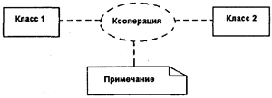Рис. 9.1. Общее представление кооперации на диаграммах уровня спецификации
Простой класс на диаграмме кооперации обозначается прямоугольником класса, внутри которого записывается строка текста. Эта строка текста называется ролью классификатора (classifier role). Роль классификатора показывает особенность использования объектов данного класса. Обычно в прямоугольнике показывается только секция имени класса, хотя не исключается возможность указания секций атрибутов и операций.
Строка текста в прямоугольнике должна иметь следующий формат:
'/' <Имя роли классификатора> ':' <Имя классификатора>
[':' <Имя классификатора >]*
Здесь Имя классификатора, если это необходимо, может включать полный путь всех вложенных пакетов. При этом один пакет от другого отделяется двойным двоеточием "::". Если не возникает путаницы, можно ограничиться указанием только ближайшего из пакетов, которому принадлежит данная кооперация. Символ "*" применяется для указания возможности итеративного повторения имени классификатора.
Если кооперация допускает обобщенное представление, то на диаграммах могут быть указаны отношения обобщения соответствующих элементов. Этот способ может быть использован для определения отдельных коопераций, которые являются, в свою очередь, частным случаем или специализацией другой кооперации. Такая ситуация изображается обычной стрелкой обобщения, направленной от символа дочерней кооперации к символу кооперации-предка (рис. 9.2). При этом роли дочерних коопераций могут быть специализациями ролей коопераций-предков.
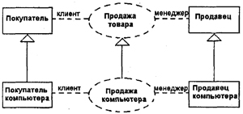Рис. 9.2. Графическое изображение отношения обобщения между отдельными кооперациями уровня спецификации
В отдельных случаях возникает необходимость явно указать тот факт, что кооперация является реализацией некоторой операции или классификатора. Это можно представить одним из двух способов.
Во-первых, можно соединить символ кооперации пунктирной линией со стрелкой обобщения с символом класса, реализацию операции которого специфицирует данная кооперация (рис. 9.3, а). Так, если в качестве класса рассмотреть "Заказ на покупку товара", у которого имеется операция "оформить_заказ (), то ее реализация может быть специфицирована в форме кооперации.
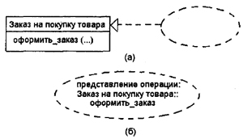Рис. 9.3. Способы представления кооперации, которая реализует операцию класса
Во-вторых, можно просто изобразить символ кооперации, внутри которого указать всю необходимую информацию, записанную по определенным правилам (рис. 9.3, б). Эти правила определяют формат записи имени кооперации, после которого записывают двоеточие и имя класса. За именем класса следует двойное двоеточие и имя операции.
Подобное общее представление кооперации на уровне спецификации используется на начальных этапах проектирования. В последующем каждая из коопераций подлежит детализации на уровне примеров, на котором раскрывается содержание и структура взаимосвязей ее элементов на отдельной диаграмме кооперации. При этом в качестве элементов диаграммы кооперации выступают объекты и связи, дополненные сообщениями. Именно эти элементы являются предметом дальнейшего рассмотрения в настоящей главе.
Отдельные аспекты спецификации объектов как элементов диаграмм уже рассматривались ранее при описании диаграмм классов (см. главу 5) и последовательности (см. главу 8). Сейчас мы более подробно остановимся на особенностях их семантики и графической нотации, поскольку объекты являются основными элементами или графическими примитивами, из которых строится диаграмма кооперации на уровне примеров. Для графического изображения объектов используется такой же символ прямоугольника, что и для классов.
Как отмечалось выше, объект (object) является отдельным экземпляром класса, который создается на этапе выполнения программы. Он может иметь свое собственное имя и конкретные значения атрибутов. Применительно к объектам формат строки классификатора дополняется именем объекта и приобретает следующий вид (при этом вся запись подчеркивается):
<Имя объекта>'/' <Имя роли классификатора> ':' <Имя классификатора>
[':' <Имя классификатора >]*
Здесь Имя роли классификатора может не указываться. В этом случае оно исключается из строки текста вместе с последующим двоеточием. Имя роли может быть опущено в том случае, если существует только одна роль в кооперации, которую могут играть объекты, созданные на базе этого класса.
Таким образом, для обозначения роли классификатора достаточно указать либо имя класса (вместе с двоеточием), либо имя роли (вместе с наклонной чертой). В противном случае прямоугольник будет соответствовать обычному классу. Если роль, которую должен играть объект, наследуется от нескольких классов, то все они должны быть указаны явно и разделяться запятой и двоеточием.
Примечание
В прямоугольнике объекта имя объекта, имя роли с символом Т или имя класса могут отсутствовать. Однако двоеточие всегда должно стоять перед именем класса, а косая черточка — перед именем роли. Следует еще раз акцентировать внимание на том обстоятельстве, что применительно к объектам вся запись должна быть подчеркнута, а имя объекта должно быть записано со строчной буквы.
Ниже приводятся возможные варианты записи строки текста в прямоугольнике объекта.
Отдельные примеры изображения объектов и классов на диаграмме кооперации приводятся на следующем рисунке (рис. 9.4).
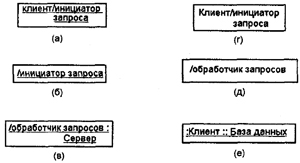Рис. 9.4. Примеры различных вариантов записи имен объектов, ролей и классов на диаграммах кооперации
Так, в первом случае (рис. 9.4, а) обозначен объект с именем "клиент", играющий роль "инициатор запроса". Далее (рис. 9.4, б) следует обозначение анонимного объекта, который играет роль инициатора запроса. В обоих случаях не указан класс, на основе которого будут созданы эти объекты. Обозначение класса присутствует в следующем варианте записи (рис. 9.4, в), причем объект также анонимный.
Применительно к уровню спецификации на диаграммах кооперации могут присутствовать именованные классы с указанием роли класса в кооперации (рис. 9.4, г) или анонимные классы, когда указывается только его роль (рис. 9.4, д). Последний случай характерен для ситуации, когда в модели могут присутствовать несколько классов с именем "Клиент", поэтому требуется явно указать имя соответствующего пакета База данных (рис. 9.4, е).
Мультиобъект (multiobject) представляет собой целое множество объектов на одном из концов ассоциации. На диаграмме кооперации Мультиобъект используется для того, чтобы показать операции и сигналы, которые адресованы всему множеству объектов, а не только одному. Мультиобъект изображается двумя прямоугольниками, один из которых выступает из-за верхней правой вершины другого (рис. 9.5, а). При этом стрелка сообщения относится ко всему множеству объектов, которые обозначают данный мульти-объект. На диаграмме кооперации может быть явно указано отношение композиции между мультиобъектом и отдельным объектом из его множества (рис. 9.5, б).
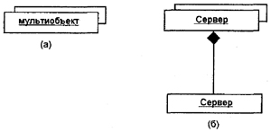Рис. 9.5. Графическое изображение мультиобъектов на диаграмме кооперации
В контексте языка UML все объекты делятся на две категории: пассивные и активные. Пассивный объект оперирует только данными и не может инициировать деятельность по управлению другими объектами. Однако пассивные объекты могут посылать сигналы в процессе выполнения запросов, которые они получают.
Активный объект (active object) имеет свою собственную нить (thread) управления и может инициировать деятельность по управлению другими объектами. При этом под нитью понимается некоторый облегченный поток управления, который может выполняться параллельно с другими вычислительными нитями или нитями управления в пределах одного вычислительного процесса или процесса управления.
Примечание
Отличие между процессом и нитью заключается в степени использования ресурсов. Говоря о процессе, имеют в виду ресурсоемкий поток управления, т. е. процесс полностью монополизирует ресурсы системы. Нить может использовать лишь небольшую часть ресурсов системы. Примером может служить выполнение некоторой программы в своем адресном пространстве или в фоновом режиме.
Активные объекты на канонических диаграммах обозначаются прямоугольником с более широкими границами (рис. 9.6). Иногда может быть явно указано ключевое слово (помеченное значение) {active}, чтобы выделить активный объект на диаграмме. Каждый активный объект может инициировать единственную нить или процесс управления и представлять исходную точку потока управления. В приведенном фрагменте диаграммы кооперации активный объект "а: Вызывающий абонент" является инициатором процесса установления соединения для обмена информацией с другим абонентом (на диаграмме не показан).
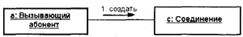Рис. 9.6. Графическое изображение активного объекта (слева) на диаграмме кооперации
В следующем примере рассматривается ситуация с вызовом функции печати из текстового редактора (рис. 9.7). Анонимный активный объект "Текстовый редактор" вначале посылает сообщение анонимному мультиобъекту "Принтер", которое инициирует выбор единственного объекта "Принтер", возможно, удовлетворяющего некоторым дополнительным условиям. После этого выбранному объекту посылается сообщение о необходимости напечатать документ, загруженный в текстовый редактор.
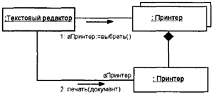Рис. 9.7. Фрагмент диаграммы кооперации для вызова функции печати из текстового редактора
Составной объект (composite object) или объект-контейнер предназначен для представления объекта, имеющего собственную структуру и внутренние потоки (нити) управления. Составной объект является экземпляром составного класса (класса-контейнера), который связан отношением агрегации или композиции (см. главу 5) со своими частями. Аналогичные отношения связывают между собой и соответствующие объекты.
На диаграммах кооперации такой составной объект изображается как обычный объект, состоящий из двух секций: верхней и нижней. В верхней секции записывается имя составного объекта, а в нижней — его составные части вместо списка его атрибутов (рис. 9.8). При этом допускается иметь в качестве частей другие составные объекты.
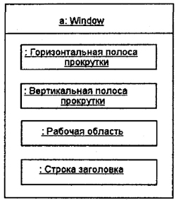Рис. 9.8. Графическое изображение составного объекта на диаграмме кооперации
Связь (link) является экземпляром или примером произвольной ассоциации. Связь как элемент языка UML может иметь место между двумя и более объектами. Бинарная связь на диаграмме кооперации изображается отрезком прямой линии, соединяющей два прямоугольника объектов (см. рис. 9.7). На каждом из концов этой линии могут быть явно указаны имена ролей данной ассоциации. Рядом с линией в ее средней части может записываться имя соответствующей ассоциации.
Связи не имеют собственных имен, поскольку полностью идентичны как экземпляры ассоциации. Другими словами, все связи на диаграмме кооперации могут быть только анонимными и записываются без двоеточия перед-именем ассоциации. Для связей не указывается также и кратность. Однако другие обозначения специальных случаев ассоциации (агрегация, композиция) могут присутствовать на отдельных концах связей. Например, символ связи типа "композиция" между мультиобъектом "Принтер" и отдельным объектом "Принтер" (см. рис. 9.7).
Связь может иметь некоторые стереотипы, которые записываются рядом с одним из ее концов и указывают на особенность реализации данной связи. В языке UML для этой цели могут использоваться следующие стереотипы:
Некоторые примеры связей с различными стереотипами изображены на рис. 9.9. Здесь представлена обобщенная схема некоторой конкретной компании с именем "С", которая состоит из отделов (анонимный мультиобъект "Отдел"). Последние, в свою очередь, состоят из сотрудников (анонимный мультиобъект "Сотрудник"). Рефлексивная связь указывает на тот факт, что менеджер отдела является в то же время и его сотрудником.
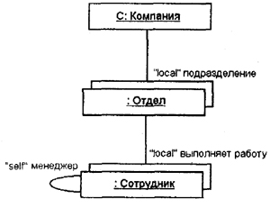Рис. 9.9. Графическое изображение связей с различными стереотипами
Примечание
Поскольку на данной диаграмме отсутствуют сообщения, то она не является, строго говоря, диаграммой кооперации. Скорее это специальный случай диаграммы классов, который иногда называют диаграммой объектов. В случае N-арной связи эта связь изображается аналогично N-арной ассоциации с использованием символа ромба.
Сообщения, как элементы языка LJML, уже рассматривались ранее при изучении диаграммы последовательности (см. главу 8). При построении диаграммы кооперации они имеют некоторые дополнительные семантические особенности. Сообщение на диаграмме кооперации специфицирует коммуникацию между двумя объектами, один из которых передает другому некоторую информацию. При этом первый объект ожидает, что после получения сообщения вторым объектом последует выполнение некоторого действия. Таким образом, именно сообщение является причиной или стимулом для начала выполнения операций, отправки сигналов, создания и уничтожения отдельных объектов. Связь обеспечивает канал для направленной передачи сообщений между объектами от объекта-источника к объекту-получателю.
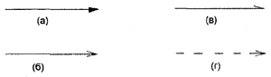Рис. 9.10. Графическое изображение различных типов сообщений на диаграмме кооперации
Сообщения в языке UML также специфицируют роли, которые играют объекты — отправитель и получатель сообщения. Сообщения на диаграмме кооперации изображаются помеченными стрелками рядом (выше или ниже) с соответствующей связью или ролью ассоциации. Направление стрелки указывает на получателя сообщения. Внешний вид стрелки сообщения имеет определенный смысл. На диаграммах кооперации может использоваться один из четырех типов стрелок для обозначения сообщений (рис. 9.10):
Каждое сообщение может быть помечено строкой текста, которая имеет следующий формат:
< Предшествующие сообщения> < [Сторожевое условие] >
<Выражение последовательности>
<Возвращаемое значение— имя сообщения> <Список аргументов>
Рассмотрим каждый из этих элементов более подробно.
<Номер сообщения ','>< Номер сообщения,'> '/'
Если список номеров сообщений пуст, то вся запись, включая наклонную черточку (слэш), опускается. Каждый номер сообщения может быть выражением последовательности без рекурсивных символов. Выражение должно определять номер другого сообщения в этой же последовательности.
Примечание
Заметим, что сами номера последовательности сообщений с одинаковым префиксом образуют отношение упорядоченности и, соответственно, неявно указывают на предшествующие сообщения. Таким предшествующим сообщением будет сообщение с номером, самая правая цифра которого на единицу меньше, чем у рассматриваемого сообщения. Например, сообщение с номером "3.1.4.6" имеет в качестве предшествующего сообщение с номером "3.1.4.5".
Смысл указания предшествующих сообщений заключается в том, что данное сообщение не может быть передано, пока не будут переданы своим адресатам все сообщения, номера которых записаны в данном списке.
Пример записи предшествующих сообщений:
A3, В4/ С5: ошибка записи (сектор).
Пример записи сторожевых условий без номеров предшествующих сообщений:
- [(х>=0)&(х<=255)] 1.2: отобразить_на_экране_цвет(х)
- [количество цифр номера = 7] 3.1: набрать_телефонный_номер()
<Терм последовательности'.'><Терм последовательности'.'>':'
Каждый из термов представляет отдельный уровень процедурной вложенности в форме законченной итерации. Наиболее верхний уровень соответствует самому левому терму последовательности. Если все потоки управления параллельные, то вложенность отсутствует. Каждый из термов последовательности имеет следующий синтаксис:
[Целое число| Имя] [Символ рекуррентности].
- Целое число указывает на порядковый номер сообщения в процедурной последовательности верхнего уровня. Сообщения, номера которых отличаются на единицу, следуют подряд один за другим.
Например, сообщение с номером "3.1.4" следует за сообщением с номером "3.1.3" в процедурной последовательности "3.1".
- Имя используется для спецификации параллельных нитей управления. Сообщения, которые отличаются только именем, являются параллельными на этом уровне вложенности. На одном уровне вложенности все нити управления эквивалентны в смысле приоритета передачи сообщений. С
Например, сообщения с выражениями "ЗЛа" и "3.16" являются параллельными в процедурной последовательности "3.1".
- Символ рекуррентности используется для указания условного или итеративного выполнения. Семантика рекуррентности представляет ноль или больше сообщений, которые должны быть выполнены в зависимости от записанного условия. Возможны два случая записи рекуррентности:
- '*' '[' Предложение-итерация ']' для записи итеративного выполнения соответствующего выражения.
Итерация представляет последовательность сообщений одного уровня вложенности. Предложение-итерация может быть опущено, если условия итерации никак не специфицируются. Наиболее часто предложение-итерация записывается на некотором псевдокоде или языке программирования. В языке UML формат записи этого предложения не определен. Например, "*[/:=/..л]", что означает последовательную передачу сообщения с параметром /, который изменяется от 1 до некоторого целого числа п с шагом 1.
- '['Предложение-условие У для записи ветвления. Это условие представляет такое сообщение, передача которого по данной ветви возможна только при истинности этого условия. Чаще всего предложение-условие записывают на некотором псевдокоде или языке программирования, поскольку в языке UML формат записи этого предложения не определен. Например, [х>у] означает, что сообщение по некоторой ветви будет передано только в том случае, если значение х больше значения у.
Примечание
Заметим, что условие записывается так же, как и итерация, но без звездочки. Это можно понимать как некоторую одношаговую итерацию. При этом предполагается, что итерация выполняется последовательно. Если необходимо отметить возможность параллельного выполнения итерации, в языке UML используется символ "*||". Итерация не распространяется на вложенные уровни данного потока или нити. Каждый уровень должен иметь свое собственное представление для итеративного повторения процедурной последовательности.
Например, сообщение
1.2.3: р:= найти_документ (спецификация_документа)
означает передачу вложенного сообщения с запросом поиска в базе данных нужного документа по его спецификации, причем источнику сообщения должен быть возвращен найденный документ.
Так, в приведенном выше примере сообщения
1.2.3: р:= найти_документ (спецификация_документа)
Аргумент найти_документ является именем сообщения, а специфика-ция_документа — списком аргументов, состоящим из единственного действительного параметра операции. При этом имя сообщения означает обращение к операции найти_ документ, которая должна быть определена в соответствующем классе объекта-получателя.
Примечание
На диаграмме кооперации при записи сообщений также могут использоваться • стереотипы, рассмотренные ранее при построении диаграммы последовательности (см. главу 8). Их семантика и синтаксис остаются без изменения, поскольку определены в нотации языка UML
9.5. Пример построения диаграммы кооперации
В качестве примера рассмотрим построение диаграммы кооперации для моделирования процесса телефонного разговора с использованием обычной телефонной сети (см. главу ф. Напомним, что объектами в этом примере являются два абонента а и Ь, два телефонных аппарата с и </, коммутатор и сам разговор как объект моделирования. При этом как коммутатор, так и разговор являются анонимными объектами.
На начальном этапе изобразим все объекты и связи между ними на диаграмме кооперации при помощи соответствующих обозначений (рис. 9.11). Заметим, что первый телефонный аппарат изображен как активный объект, а второй — как пассивный.
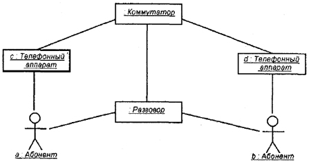Рис. 9.11. Начальный фрагмент диаграммы кооперации для примера моделирования обычного телефонного разговора
В последующем необходимо специфицировать все связи на этой диаграмме, указав на их концах необходимую информацию в форме ролей связей. Дополненный таким образом вариант диаграммы кооперации изображен ниже (рис. 9.12). Заметим, что для объекта "Разговор" указано помеченное значение {transient}, которое означает, что этот объект создается в процессе выполнения объемлющего процесса и уничтожается до его завершения. Напомним, что помеченные значения (tagged values) являются стандартными элементами языка UML.
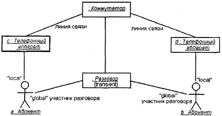Рис. 9.12. фрагмент диаграммы кооперации, дополненный стереотипами ролей связей, именами ассоциаций и помеченным значением объекта
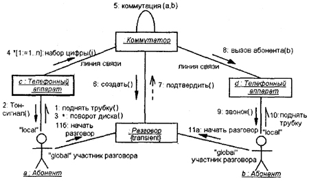Рис. 9.13. Окончательный вариант диаграммы кооперации для моделирования телефонного разговора
Наконец, на диаграмму кооперации необходимо нанести все сообщения, указав их порядок и семантические особенности. Окончательный фрагмент диаграммы кооперации изображен на рис. 9.13 и содержит, строго говоря, модель кооперации только для начала разговора. Эта диаграмма может быть дополнена сообщениями, необходимыми для окончания разговора, что читателям предлагается выполнить самостоятельно в качестве упражнения.
Как нетрудно заметить, диаграмма кооперации для примера с телефонным разговором не содержит ни временных особенностей передачи сообщений, ни особенностей жизненного цикла участвующих в данной кооперации объектов. Поэтому может быть принято решение о том, что она является избыточной при наличии построенной диаграммы последовательности. Этот факт не вызывает сомнений в тех случаях, когда структура взаимодействующих объектов является достаточно тривиальной.
Если же взаимодействующие объекты образуют между собой различные типы отношений-ассоциаций (композиция, агрегация), то диаграмма кооперации оказывается необходимым представлением модели на всех ее уровнях.
9.6. Заключительные рекомендации по построению диаграмм кооперации
Построение диаграммы кооперации можно начинать сразу после построения диаграммы вариантов использования. В этом случае каждый из вариантов использования может быть специфицирован в виде отдельной диаграммы кооперации уровня спецификации. Эта диаграмма способствует более . полному пониманию особенностей реализации функций системой, хотя и не может содержать всю информацию, необходимую для их реализации.
В дальнейшем, после построения диаграммы классов, каждая из диаграмм кооперации может уточняться в виде соответствующей диаграммы уровня примеров. Важно понимать, что диаграмма кооперации этого уровня может содержать те и только те объекты и связи, которые уже определены на построенной ранее диаграмме классов. В противном случае, если возникает необходимость включения в диаграмму кооперации объектов, которые создаются на основе отсутствующих классов, соответствующие диаграммы классов должны быть модифицированы явным описанием этих классов.
Следует помнить, что на диаграмме кооперации изображаются только те объекты, которые непосредственно в ней участвуют. При этом объекты могут выступать в различных ролях, которые должны быть явно указаны на соответствующих концах связей диаграммы. Применение стереотипов унифицирует кооперацию, обеспечивая ее адекватную интерпретацию как со стороны заказчиков, так и со стороны разработчиков. Тем не менее, целесообразно различать терминологию, используемую на диаграммах кооперации уровня спецификации и уровня примеров.
Так, при построении диаграмм кооперации уровня спецификации желательно применять наиболее понятную заказчику терминологию, избегая технических фраз и словосочетаний. Например, "оформить заказ", "отгрузить товар", "представить отчет", "разработать план" и т. д. Такие известные разработчикам слова как "сервер", "защищенный протокол", "закрытая операция класса", а также стереотипы и помеченные значения на этом уровне применять не рекомендуется. На уровне спецификации нужно стремиться достичь по возможности полного взаимопонимания между заказчиком и командой разработчиков всех вариантов использования проектируемой системы в контексте их кооперации.
При построении диаграмм кооперации уровня примеров терминология должна наиболее точно отражать все аспекты реализации соответствующих объектов и связей. Поскольку диаграмма этого уровня является документацией для разработчиков системы, здесь допустимо использовать весь арсенал стереотипов, ограничений и помеченных значений, который имеется в языке UML. Если типовых обозначений недостаточно, разработчики могут дополнить диаграмму собственными элементами, используя механизм расширений языка UML.
Процесс построения диаграммы кооперации уровня примеров должен быть согласован с процессами построения диаграммы классов и диаграммы последовательности. В первом случае, как уже отмечалось, необходимо следить за использованием только тех объектов, для которых определены порождающие их классы. Во втором случае нужно согласовывать последовательности передаваемых сообщений. Речь идет о том, что не допускается различный порядок следования сообщений для моделирования одного и того же взаимодействия на диаграмме кооперации и диаграмме последовательности. Таким образом, диаграмма кооперации, с одной стороны, обеспечивает концептуально согласованный переход от статической модели диаграммы классов к динамическим моделям поведения, представляемым диаграммами последовательности, состояний и деятельности. С другой стороны, диаграмма этого типа предопределяет особенности реализации модели на диаграммах компонентов и развертывания, которые являются предметом рассмотрения в двух последующих главах книги.
| Каталог | Индекс раздела | Оглавление |